0. 学习途径
1. mujoco环境搭建过程记录
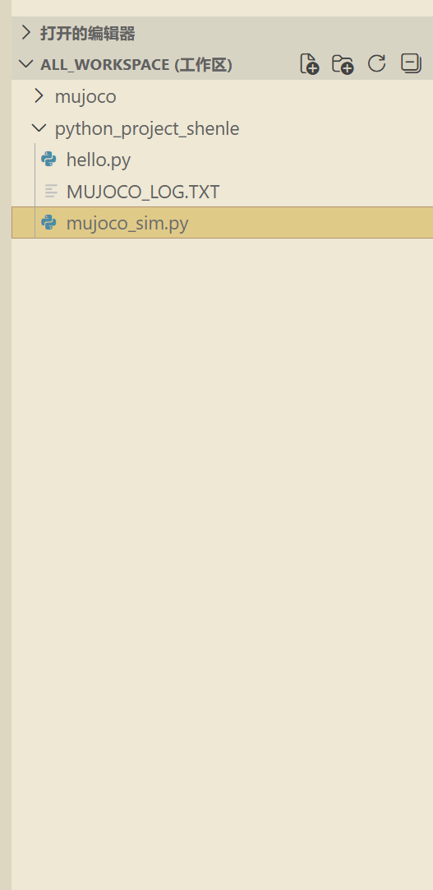
了解了下工作区的工作方式，设置了这个全局的工作区先import os
import subprocess
import sys
# Mujoco安装路径
MUJOCO_PATH = "e:\\apps\\mujoco"
def check_directory_structure():
"""检查Mujoco目录结构是否完整"""
print("🐱 检查Mujoco目录结构...")
required_dirs = [
os.path.join(MUJOCO_PATH, "bin"),
os.path.join(MUJOCO_PATH, "include"),
os.path.join(MUJOCO_PATH, "lib"),
os.path.join(MUJOCO_PATH, "model")
]
all_good = True
for dir_path in required_dirs:
if os.path.exists(dir_path):
print(f"✅ 目录存在: {dir_path}")
else:
print(f"❌ 目录不存在: {dir_path}")
all_good = False
return all_good
def check_key_files():
"""检查关键文件是否存在"""
print("\n🐱 检查关键文件...")
required_files = [
os.path.join(MUJOCO_PATH, "bin", "mujoco.dll"),
os.path.join(MUJOCO_PATH, "bin", "simulate.exe"),
os.path.join(MUJOCO_PATH, "include", "mujoco", "mujoco.h"),
os.path.join(MUJOCO_PATH, "lib", "mujoco.lib"),
os.path.join(MUJOCO_PATH, "model", "humanoid", "humanoid.xml")
]
all_good = True
for file_path in required_files:
if os.path.exists(file_path):
print(f"✅ 文件存在: {file_path}")
else:
print(f"❌ 文件不存在: {file_path}")
all_good = False
return all_good
def test_command_line_tools():
"""测试命令行工具是否能正常运行（替代simulate图形界面测试）"""
print("\n🐱 测试命令行工具...")
# 使用testxml.exe来测试，它是命令行工具，适合自动化测试
testxml_path = os.path.join(MUJOCO_PATH, "bin", "testxml.exe")
if not os.path.exists(testxml_path):
print("❌ testxml.exe不存在，无法测试")
return False
try:
# 使用一个简单的模型文件进行测试
model_path = os.path.join(MUJOCO_PATH, "model", "humanoid", "humanoid.xml")
result = subprocess.run(
[testxml_path, model_path],
capture_output=True,
text=True,
timeout=5
)
if result.returncode == 0:
print(f"✅ testxml.exe可以正常运行")
print(f" 测试模型: {model_path}")
print(f" 输出: {result.stdout.strip()}")
return True
else:
print(f"❌ testxml.exe运行失败: {result.stderr}")
return False
except Exception as e:
print(f"❌ 测试命令行工具时出错: {e}")
return False
def main():
print("🐱 开始验证Mujoco安装...")
print(f"🐱 Mujoco路径: {MUJOCO_PATH}")
# 检查目录结构
dir_ok = check_directory_structure()
# 检查关键文件
file_ok = check_key_files()
# 测试命令行工具（替代simulate图形界面测试）
tool_ok = test_command_line_tools()
print("\n🐱 验证结果汇总:")
if dir_ok and file_ok and tool_ok:
print("🎉 Mujoco安装验证通过！可以开始使用啦～")
print("💡 提示：simulate.exe是图形界面程序，您可以手动运行它来查看效果哦～")
return 0
else:
print("😿 Mujoco安装可能存在问题，请检查上述错误信息")
return 1
if __name__ == "__main__":
sys.exit(main())
上面是mujoco的安装验证py脚本
PS E:\apps\python\python_project_shenle> python .\mujoco_sim.py
🐱 开始验证Mujoco安装...
🐱 Mujoco路径: e:\apps\mujoco
🐱 检查Mujoco目录结构...
✅ 目录存在: e:\apps\mujoco\bin
✅ 目录存在: e:\apps\mujoco\include
✅ 目录存在: e:\apps\mujoco\lib
✅ 目录存在: e:\apps\mujoco\model
🐱 检查关键文件...
✅ 文件存在: e:\apps\mujoco\bin\mujoco.dll
✅ 文件存在: e:\apps\mujoco\bin\simulate.exe
✅ 文件存在: e:\apps\mujoco\include\mujoco\mujoco.h
✅ 文件存在: e:\apps\mujoco\lib\mujoco.lib
✅ 文件存在: e:\apps\mujoco\model\humanoid\humanoid.xml
✅ testxml.exe可以正常运行
测试模型: e:\apps\mujoco\model\humanoid\humanoid.xml
输出: Comparison of original and saved model
Max difference : 2.34e-06
Field name : jnt_range
🐱 验证结果汇总:
🎉 Mujoco安装验证通过！可以开始使用啦～
💡 提示：simulate.exe是图形界面程序，您可以手动运行它来查看效果哦～
PS E:\apps\python\python_project_shenle>demo测试
PS E:\apps\mujoco\bin> .\simulate.exe ..\model\humanoid\humanoid.xml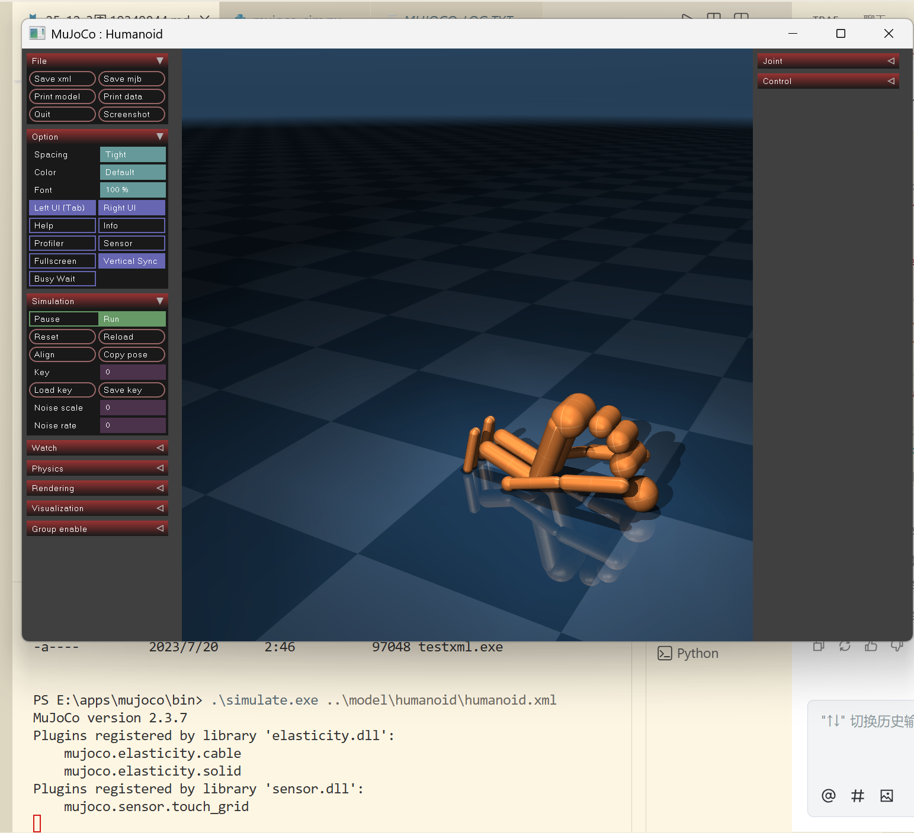
在conda创建的虚拟环境中搭建mujoco的python依赖
PS E:\apps\python\python_project_shenle> conda activate mujoco_env
PS E:\apps\python\python_project_shenle> conda info --envs
# conda environments:
#
# * -> active
# + -> frozen
base E:\apps\conda
mujoco_env E:\apps\conda\envs\mujoco_env
PS E:\apps\python\python_project_shenle>  哎呦我去，还得是外网，光速解决问题
哎呦我去，还得是外网，光速解决问题

conda list env #显示所有环境
conda activate mujoco_env #激活mujoco_env环境
conda deactivate #退出当前环境
conda remove -n mujoco_env --all -y #删除mujoco_env环境# -*- coding: utf-8 -*-
import mujoco
print(' MuJoCo Python bindings are installed successfully.')
print(f' MuJoCo version: {mujoco.__version__}')result
(mujoco_env_py310) E:\apps\python\python_project_shenle>python test_mujoco.py
MuJoCo Python bindings are installed successfully.
MuJoCo version: 3.4.0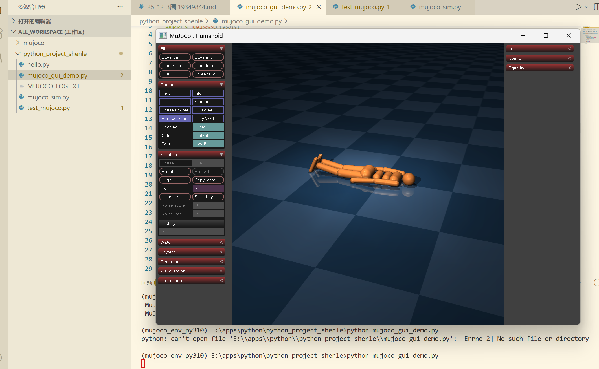
# -*- coding: utf-8 -*-
import mujoco
import mujoco.viewer
import time
# 模型路径 - 使用MuJoCo自带的人形机器人模型
model_path = r"e:\apps\mujoco\model\humanoid\humanoid.xml"
# 加载模型
model = mujoco.MjModel.from_xml_path(model_path)
data = mujoco.MjData(model)
# 创建交互式Viewer
viewer = mujoco.viewer.launch_passive(model, data)
try:
# 运行模拟循环
while viewer.is_running():
# 步进模拟（1/60秒）
simstart = data.time
while data.time - simstart < 1.0/60.0:
mujoco.mj_step(model, data)
# 刷新viewer
viewer.sync()
# 控制帧率
time.sleep(0.01)
finally:
# 清理资源
viewer.close()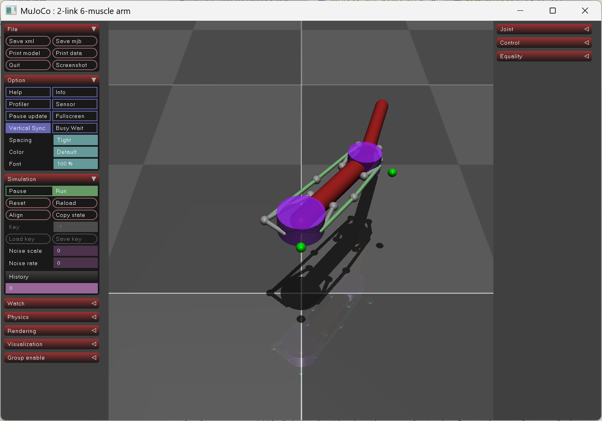
把东西复制过去才呈现出来
# -*- coding: utf-8 -*-
"""
MuJoCo同目录加载方案
将STL文件和URDF放在同一目录，使用简化路径
"""
import os
import shutil
import xml.etree.ElementTree as ET
import mujoco
import mujoco.viewer
# 配置路径
URDF_SOURCE = r"e:\project_wu\rm_65_b_description\urdf\rm_65_b_description.urdf"
MESH_SOURCE_DIR = r"e:\project_wu\rm_65_b_description\meshes"
WORKING_DIR = r"e:\apps\python\python_project_shenle"
def prepare_files():
"""准备文件：复制STL到工作目录，简化URDF路径"""
print("📦 正在准备文件...")
# 复制所有STL文件到工作目录
stl_files = []
for file in os.listdir(MESH_SOURCE_DIR):
if file.endswith(".STL") or file.endswith(".stl"):
source_path = os.path.join(MESH_SOURCE_DIR, file)
target_path = os.path.join(WORKING_DIR, file)
shutil.copy2(source_path, target_path)
stl_files.append(file)
print(f" 复制: {file} -> {target_path}")
# 读取并处理URDF
with open(URDF_SOURCE, 'r') as f:
urdf_content = f.read()
root = ET.fromstring(urdf_content)
# 简化所有mesh路径为只使用文件名
for mesh in root.findall(".//mesh"):
if 'filename' in mesh.attrib:
filename = mesh.attrib['filename']
# 只保留文件名部分
simple_filename = os.path.basename(filename)
mesh.attrib['filename'] = simple_filename
print(f" 简化路径: {filename} -> {simple_filename}")
# 保存处理后的URDF到工作目录
simplified_urdf = os.path.join(WORKING_DIR, "simplified.urdf")
with open(simplified_urdf, 'w') as f:
f.write(ET.tostring(root, encoding='unicode'))
print(f"\n✅ 文件准备完成！")
print(f" STL文件数量: {len(stl_files)}")
print(f" 简化后的URDF: {simplified_urdf}")
return simplified_urdf
def main():
print("🐱 MuJoCo同目录加载方案开始...")
try:
# 准备文件
simplified_urdf = prepare_files()
# 加载模型
print("\n🚀 正在加载模型...")
model = mujoco.MjModel.from_xml_path(simplified_urdf)
data = mujoco.MjData(model)
print("✅ 模型加载成功！")
# print(f"📦 机械臂名称: {model.name}")
print(f"⚙️ 关节数量: {model.njnt}")
print(f"📏 连杆数量: {model.nbody}")
# 启动Viewer
print("🚀 正在启动3D可视化窗口...")
mujoco.viewer.launch(model, data)
except Exception as e:
print(f"\n❌ 加载模型时出错: {e}")
import traceback
traceback.print_exc()
if __name__ == "__main__":
main()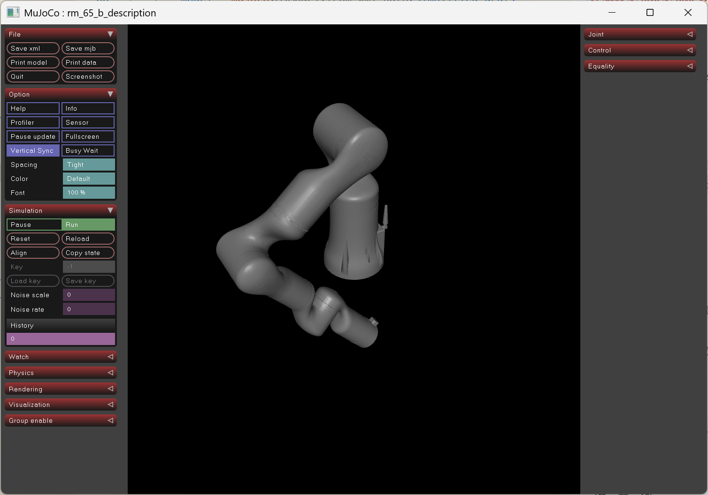
2. xml文件
XML（Extensible Markup Language，可扩展标记语言）是一种超常用的数据存储和传输格式
设计目标：自我描述性强
(1)xml基本结构
XML文档是一棵「树形结构」
- 元素（标签）：用 <名称> 和 </名称> 包围的内容，比如《编程喵》
- 属性：元素的附加信息，写在开始标签里，比如… 中的 id 就是属性
- 文本内容：元素内部的实际数据，比如上面例子里的《编程喵》
eg:
<?xml version="1.0" encoding="UTF-8"?> <!-- XML声明 -->
<library> <!-- 根元素 -->
<book id="001"> <!-- 子元素 + 属性 -->
<title>Python编程入门</title> <!-- 嵌套子元素 -->
<author>编程喵</author>
</book>
<book id="002">
<title>Mujoco仿真教程</title>
<author>机器人喵</author>
</book>
</library>(2)xml的语法规则
- 标签必须闭合：要么成对（
<a></a>），要么自闭合（<img src="cat.png"/>） - 大小写敏感：
<Book>和<book>是不同的元素哦 - 属性值必须加引号：可以是单引号或双引号，比如
id='001'或id="001" - 元素必须正确嵌套：不能交叉嵌套（比如错误：
<a><b></a></b>，正确：<a><b></b></a>） - 必须有且只有一个根元素：整个文档只能有一个顶层元素
(3)XML的特点
- 可扩展性：你可以自定义任何标签名（只要符合语法），比如在Mujoco里用
<robot>、<link>等自定义标签～ - 自我描述：标签名能直观反映数据含义，比如
<author>一看就知道是作者信息～ - 平台无关：任何系统都能解析XML，方便跨平台数据交换～
- 结构化强：适合表示复杂的层次数据，比如机器人模型、配置文件等～
3. simulate工具使用
mujoco给的可视化和调整的窗口
(mujoco_env_py310) E:\apps\mujoco\bin>simulate.exe
# 可以直接从文件窗口把xml文件拖入simulate窗口
# 也可以命令行添加xml文件路径
(1)常用操作
- 双击物体表示选中并且高亮
- 双击选中物体后，ctrl+左键调整姿态
- 双击选中物体后，ctrl+右键是在双击选中的位置施加一个力
- +和-是仿真世界时间流逝速度
- ctrl+A相机视角回正
- 空格是暂停pause和继续run
- ctrl+Q退出
(2)快捷键
| 快捷键 | 功能 |
|---|---|
| F1 | help帮助 |
| F2 | info资源占用率 |
| F3 | profiler数据动态表 |
| F4 | sensors机器人的传感器数据 |
| F5 | 全屏 |
| F6 | 切换可视化坐标系 |
| F7 | 实体名字标签 |
| TAB | 隐藏/显示左侧工具栏 |
| Deleat | 重置世界 |
| ` | 把几何体的最小外接矩形框出来 |
| Q | 相机可视化 |
| [ ] | 切换相机视角 |
| W | 世界网格化 |
| E | Equality渲染质量 |
| R | 开光光线反射 |
| T | 几何体透明化 |
| Y | 测距可视化 |
| U | 驱动器方向可视化 |
| I | 转动惯量可视化 |
| O | 调整物体位姿可视化 |
| P | Contact可视化 |
| \ | Mesh Tree |
| A | auto Connect |
| D | 只显示body |
| S | 画面亮度调整 |
| F | 接触力大小及其方向可视化 |
| G | 迷雾 |
| J | 关节方向可视化 |
| H | 凸包可视化 |
| K | 关闭天空盒 |
| ; | skin可视化 |
| ’ | 缩放转动惯量 |
| Z | 灯光 |
| X | Texture关闭 |
| C | 接触点可视化 |
4. 仿真世界
(1)世界根节点
<mujoco model="模型名称">
</mujoco>(2)仿真计算配置
compiler节点
<compiler angle="radian/degree" autolimits="true" >compiler节点中定义的包括angel,autolimits(受力限制)等，规定，受力限制开启。（角度单位为弧度制是机器人开发的常用单位制度）
option节点
<option gravity="0 0 -9.81" integrator="implicitfast" timestep="0.002" density="1.225" viscosity="1.8e-5" />- timestep代表仿真走一步的时间，也就是运行一次之后仿真计算出来timestep时长后的世界，单位秒。timestep是一定要规定的，否则仿真不知如何计算
- gravity重力加速度
- wind凤在三个方向的速度
- magnetic=“0 -0.5 0”世界磁场，影响磁力传感器
- density介质密度，水，空气等等，kg/m
- viscosity介质的粘性系数
- integrator积分器，影响仿真计算精度和速度,常用的有Euler,Implicit,ImplicitFast,RK4，默认欧拉积分器
- solviter求解器，默认牛顿，有PGS,CG,Newton等
- iterations求解器迭代次数(约束)，默认100
求解器其他配置
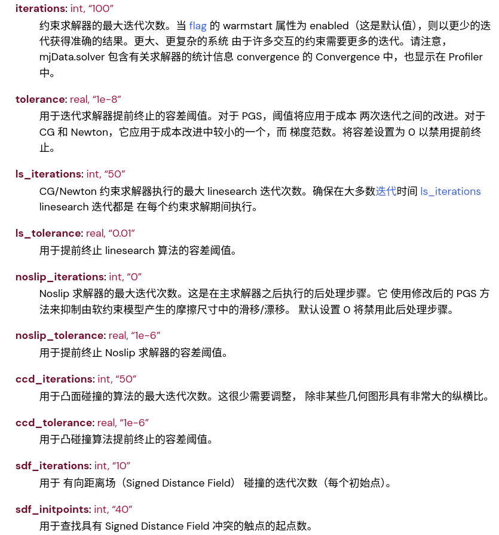
积分器比较
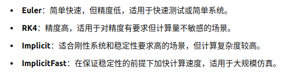
euler:简单快速，精度低，适用于快速或者简单系统
RK4:精度高，适用于对精度有要求但是不敏感的场景
implicit/implicitfast:适用于高刚性系统，精度高，计算量大
(3)可视化配置
visual节点
<visual>
<global realtime="1"/>
<quality shadowsize="16384" numslices="28" offsamples="4" />
<headlight diffuse="1 1 1" specular="0.5 0.5 0.5" active="1" />
<rgba fog="0 1 0 1" haze="1 0 0 1"/>
</visual>- global:realtime仿真速度比例，在simulate中可以使用，大于1的按1计算
- quality:画面质量
- headlight：和simulate中自由相机相同方向的光源
- map：鼠标影响操作
- scale：渲染缩放
- rgba: fog 迷雾颜色；haze 地平线颜色
(4)资源配置
<asset>
<mesh name="tetrahedron" vertex="0 0 0 1 0 0 0 1 0 0 0 1" />
<mesh file="card.obj" />
<texture type="2d" file="./king_of_clubs.png" />
<material name="king_of_clubs" texture="king_of_clubs" />
<hfield name="agent_eval_gym" file="agent_eval_gym.png" size="10 10 1 1" />
<texture type="skybox" file="../asset/desert.png"
gridsize="3 4" gridlayout=".U..LFRB.D.." />
<texture name="plane" type="2d" builtin="checker" rgb1=".1 .1 .1" rgb2=".9 .9 .9"
width="512" height="512" mark="cross" markrgb=".8 .8 .8" />
<material name="plane" reflectance="0.3" texture="plane" texrepeat="1 1" texuniform="true"/>
<material name="box" rgba="0 0.5 0 1" emission="0"/>
</asset>几何资源 mesh
- vertex 通过坐标点构造几何体
- file 加载obj或者stl模型，不指定name默认为文件名
- hfield通过高度图加载几何体
纹理/材质资源
- texture 可以通过加载png对物体进行贴图，使用方法texture→material
- material 材质，可以指定纹理，颜色，反射，发光等
- skybox texture的类型，直接加载即可 天空盒演示：
<texture type="skybox" builtin="gradient" rgb1="1 1 1" rgb2="0.6 0.8 1" width="256" height="256"/>一个场景里只能有一个天空盒，可以直接使用
<asset>是___仿真场景的“素材库”___————专门存放场景中可复用的视觉、几何相关资源（比如纹理、材质、3D 网格模型、地形等）。这些资源一旦在<asset>中定义，就能被场景中的<geom>（几何体）、<body>（物理体）重复引用，避免重复写相同配置，让模型文件更简洁、易维护。
(1) compiler - 编译配置标签:控制 MuJoCo 解析 XML 文件时的 “编译” 行为，比如坐标系统、文件路径、浮点精度等，是模型解析的基础配置。
(2) option - 全局仿真选项标签:定义仿真的全局物理参数、求解器配置、可视化基础规则等，是控制仿真行为的核心。
(3) default - 默认属性模板标签:定义可复用的属性模板，避免重复编写相同的几何、关节、刚体属性，大幅简化 XML 结构。
(4) asset - 资源库标签:管理仿真中用到的 “素材”，比如网格（mesh）、纹理（texture）、材质（material）、皮肤（skin）等，是可视化和物理属性的 “素材库”
(5) worldbody - 世界体根容器标签:所有物理实体（刚体body、几何geom、关节joint、灯光light、相机camera）的根容器，是仿真世界的 “物理空间”。
- 根worldbody是全局坐标系的原点
- 子body可以嵌套，形成父子刚体关系
- 包含的geom定义碰撞 / 可视化形状，joint定义刚体间的约束
(6) visual - 全局可视化配置标签:控制可视化渲染的全局参数
建议按compiler→option→default→asset→visual→worldbody的顺序编写，更易维护
hfield 是 MuJoCo 中专门用于创建2D 网格状高度场的几何类型（属于geom的一种，也可作为独立标签）
5. worldbody
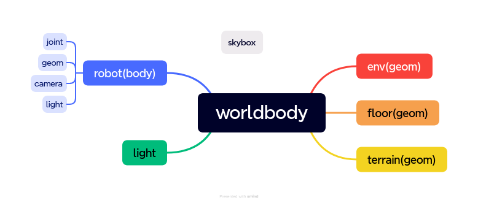
作为所有物理实体和可视化元素的根容器
worldbody是构建仿真世界的 “物理空间”，所有刚体、几何、关节、相机、灯光等都必须嵌套在其中
- 自身对应全局坐标系的原点（0 0 0），是整个仿真世界的 “地基”；
- 支持嵌套body标签，形成父子刚体树（比如机器人的底座→大臂→小臂→末端执行器）；
- 既包含 “物理实体”（刚体、关节、碰撞几何），也包含 “可视化元素”（相机、灯光）；
- 无自身属性（仅作为容器），所有配置都通过其子标签实现。
| 子元素 | 核心作用 | 典型使用场景 |
|---|---|---|
| body | 定义刚体，可嵌套，构成父子刚体关系 | 机器人连杆、车辆底盘、可动物体 |
| geom | 定义几何形状（碰撞/可视化），支持 cube/sphere/cylinder/plane/hfield 等类型 | 地面、物体外形、碰撞检测体 |
| joint | 约束body之间的运动，定义自由度（DOF） | 机械臂旋转关节、滑块移动关节 |
| light | 定义光源，控制可视化的光照效果 | 全局照明、定向补光 |
| camera | 定义观察视角，可固定或随body运动 | 仿真可视化视角、数据采集视角 |
| site | 标记点（无物理碰撞），用于定位、传感器检测、目标点 | 机器人末端点、力传感器安装点 |
| inertial | 定义body的惯性属性（质量、转动惯量） | 自定义刚体的物理属性 |
注意事项
- 坐标系统：子body的pos/quat是相对于父 body的局部坐标，而非全局坐标（比如示例中arm1的pos是相对于base的）；
- 关节的位置：joint必须定义在父 body内部，且紧邻子body之前，它约束的是 “父 body” 和 “子 body” 之间的相对运动；
- 几何的碰撞性：默认geom参与物理碰撞（contype=1、conaffinity=1），如果只想做可视化，可设置contype=“0” conaffinity=“0”；
- 惯性属性：如果不给body设置inertial，MuJoCo 会根据geom的形状自动计算，但复杂模型建议显式定义（更精准）；
- 嵌套深度：body的嵌套深度无限制，但过深会增加仿真计算量（机器人建议控制在 10 层以内）。
geom
- type=“[plane/hfield/sphere/capsule/ellipsoid/cylinder/box/mesh/sdf]
- size=“0 0 0”（三个参数根据type选择填写）
- pos=“0 0 0”（位置）
- condim=“[1/3/4/6]“（见下表）
- priority=“0”（碰撞优先级）
- material=“xxx”（材质名）
- rgba=“0 0 0 0”（几何体颜色，比材质省资源）
- friction=“1 0.005 0.0001”（滑动，扭矩，滚动摩擦系数）
- mass（质量，单位kg，它和密度只能有一个），density=“0”（密度，单位kg/m³，它和质量拼了）
- shellinertia=[true/false]（开了就是质量集中在边缘，关了就是均匀密度）
- fromto=“0 0 0 0 0 0”（类似旋转通常代替旋转+长度，只能用于胶囊、盒子、圆柱体和椭球体，前三个是point1，后三个point2，几何体的Z轴正方向为point2→point1）
- quat, axisangle, xyaxes, zaxis, euler quat:wxyz,isaac gym:xyzw euler:xyz
| type | size参数量 | 描述 |
|---|---|---|
| plane | 3 | X 半长;Y半长;渲染时网格线间距。如果 X half-size或 Y half-size 为 0，则平面在尺寸为 0 的维度中呈现为无限 |
| hfield | 0 | 将忽略几何大小，并改用高度字段大小 |
| sphere | 1 | 球体的半径 |
| capsule | 1 or 2 | 胶囊两侧半球半径;不使用 fromto 时cylinder部分的半长 |
| ellipsoid | 3 | X半径;Y 半径;Z 半径 |
| cylinder | 1 or 2 | 圆柱体半径;不使用 fromto 时的半长 |
| box | 3 | X半长;Y半长;Z半长 |
| mesh | 0 | 将忽略几何尺寸，改用网格尺寸 |
| condim | Description |
|---|---|
| 1 | 无摩擦接触 |
| 3 | 有规律的摩擦接触，在切线平面上有相反的滑移 |
| 4 | 摩擦接触，切线平面的反向滑移和围绕接触法线的旋转。这是 可用于对软接触进行建模（与接触穿透无关） |
| 6 | 摩擦接触、切线平面内的反滑移、围绕接触法线旋转和旋转 围绕切线平面的两个轴。后一种摩擦效应有助于预防 无限滚动的对象 |
site
简易版geom，不作为碰撞体积和质量计算，只能使用简易几何体，适用于在某些小部位安装传感器或者小结构渲染等，其属性和geom非常相近
标记点（无物理碰撞），用于定位、传感器检测、目标点
机器人末端点、力传感器安装点
body
在运动仿真过程中我们要实现整个机器人模型，也就是身体（骨骼+关节）拼接出来及对应body，gemo和joint，多个body嵌套就是机器人整体，整体也是呈树状嵌套。 在添加joint之前我们先学习一下mujoco中body的坐标树规则，这个和ros的tf树很像，可以类比。机器人对于世界有一个坐标，机器人每个坐标系都是基于上一个坐标系的相对位置，其中body在循环嵌套，每一层中的gemo都是对于这一层的body的相对位置，每个body的坐标都是对于上一个body的相对位置。这和tf树模式几乎差不多，就如下图一样：
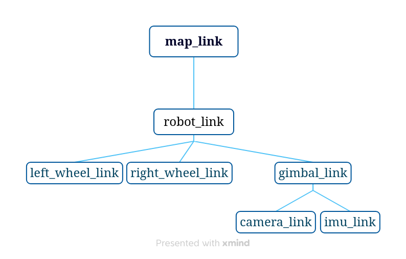
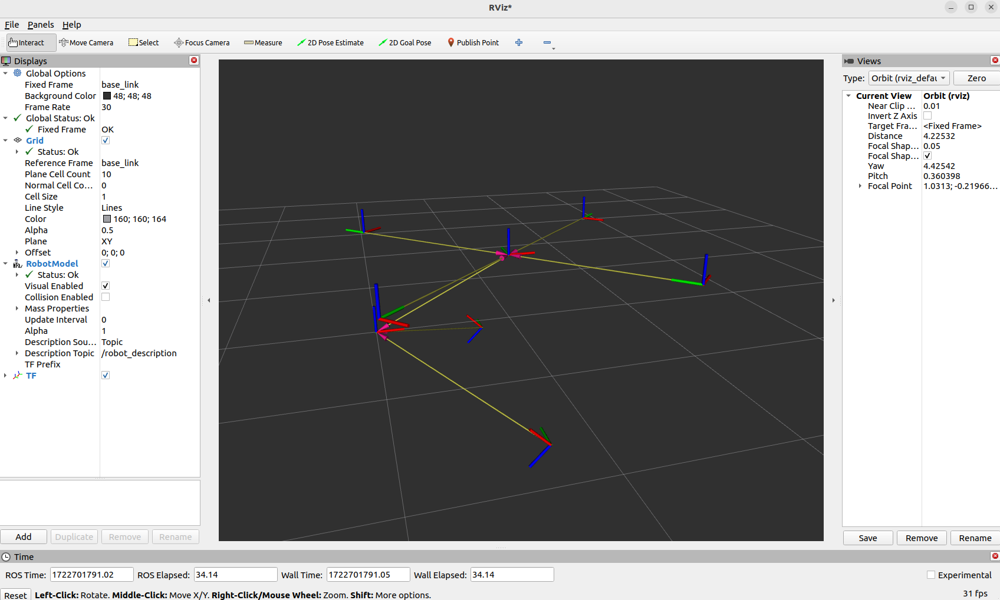
| 属性 | 核心作用 | 示例值 | 备注 |
|---|---|---|---|
| name | 刚体命名（唯一标识），用于仿真中索引该刚体 | base/arm1 | 建议语义化命名，方便调试 |
| pos | 相对于父坐标系的位置（x y z） | 0 0 0.5 | 默认0 0 0 |
| quat | 相对于父坐标系的四元数旋转（w x y z） | 1 0 0 0 | 默认无旋转（单位四元数） |
| euler | 相对于父坐标系的欧拉角旋转（roll pitch yaw），单位由compiler决定 | 0 0 90 | 与quat二选一，易理解 |
| xyaxes | 自定义局部坐标系的 X/Y 轴方向 | 1 0 0 0 1 0 | 进阶用法，新手暂可不关注 |
<freejoint />freejoint会给刚体解锁全部 6 个自由度（3 个平移 + 3 个旋转）
如果freejoint所在的body直接嵌套在worldbody下，刚体相对全局坐标系自由运动；
6. joint
joint将body之间连接在一起，使其可以进行活动。这么说吧，body中的所有geom为一个整体然后joint是连接这些整体的。就是body和body靠joint活动，body中只能有一个joint用来连接当前body和上一层body。再根本一点就是joint对于上一层body是相对静止的，当前body与joint是在运动。
- name
- tpye=“[free/ball/slide/hinge/universal]” 自由关节，一般不用(6dof)；球形关节，绕球旋转(3dof)；滑轨(1dof)；旋转关节(2dof);传动轴，双轴铰链
- pos=“0 0 0”关节在body的位置（默认0 0 0）
- axis=“0 0 1” x,y,z活动轴，只有slide和hinge有用
- stiffness=“0” 弹簧，数值正让关节具有弹性
(0-pos)*stiffness - range=“0 0” 关节限制，当球形时只有二参有效，一参设置为0，但是要在compiler指定autolimits
- limited=“auto” 此属性指定关节是否有限制
- damping=“0” 阻尼 交叉滚子轴承damping
(0-v)*damping - frictionloss=“0”关节摩擦损失
- armature=“0” 电枢 转子转动惯量*减速比^2（很小的值）
- ref 角度偏置
必须嵌套在父body内、子body之前，其作用是限制刚体的自由度（DOF）,无joint时候，子刚体与父刚体完全固连，无相对运动。
joint是某个body的直接子节点，这个joint约束的是【该body的父刚体】和【该body本身】
eg
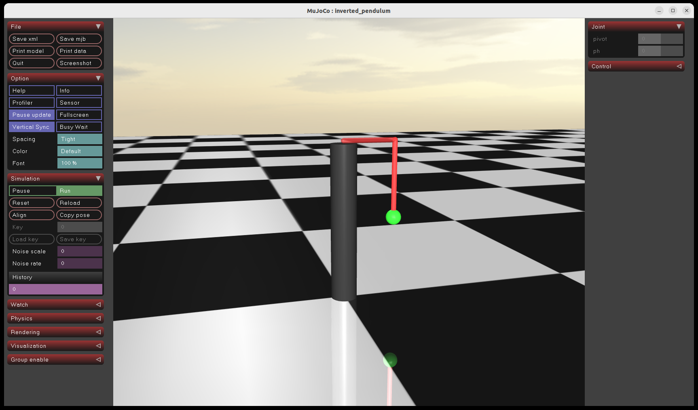
<body name="support"> <!-- 父刚体：支撑柱 -->
<geom .../> <!-- 支撑柱的几何形状 -->
<body name="rotay_am"> <!-- 子刚体：水平杆（是support的直接子节点） -->
<joint name="pivot"/> <!-- ✅ 这个joint是rotay_am的子节点，但约束的是support ↔ rotay_am -->
<geom .../> <!-- 水平杆的几何形状 -->
<body name="pendulum"> <!-- 子刚体：摆杆（是rotay_am的直接子节点） -->
<joint name="ph"/> <!-- ✅ 约束rotay_am ↔ pendulum -->
<geom .../>
</body>
</body>
</body>7. friction(残留)
是控制几何表面接触时阻力的关键参数
直接影响仿真中物体的滑动、滚动行为（比如地面的摩擦力决定机器人是否打滑，滑杆是否能稳定停留）
- 阻止两个接触的geom发生相对滑动/滚动
- 分为滑动摩擦和滚动摩擦,前者是主要的阻力来源，后者用来模拟轮子、球体滚动时的阻尼
配置
friction是geom标签的属性，优先级为：geom自身属性 > default全局模板。
(1)基础配置格式
eg:friction="0.5 0.3 0.2"
friction="sliding rolling spinning"
| 数值位置 | 含义物理意义 | 典型取值范围 |
|---|---|---|
| 第一个 | 滑动摩擦系数（μ）：决定两个表面相对滑动时的阻力（核心），数值越大，越难滑动 | 0.1-1.0（地面）、0.01-0.1（光滑表面） |
| 第二个 | 滚动摩擦系数：决定刚体滚动时的阻力（如小球、圆柱滚动减速），数值远小于滑动摩擦 | 0.001~0.01 |
| 第三个 | 自旋摩擦系数：决定刚体绕接触点自旋时的阻力（极少用到，一般沿用默认） | 0.001~0.01 |
全局默认配置（通过default标签）
eg:
<default>
<!-- 全局geom默认摩擦：滑动0.1，滚动/自旋默认（省略则用MuJoCo内置值） -->
<geom friction=".1" solref=".5e-4" solimp="0.9 0.99 1e-4"/>
<!-- 特定类别的geom单独配置 -->
<default class="collision">
<geom type="box" friction=".1" .../>
</default>
</default>当两个geom接触时候，mujoco会取二者摩擦系数的最小值作为接触系数
8. actuator (残留)
actuator节点包含在mujoco节点中，这是mojoco中运动控制的节点，在这里指定驱动器，给机器人加入肌肉
general 通用驱动器


general驱动器类似编程语言中的父对象，后面很多驱动器继承该驱动器的属性，建模的时候不要使用该驱动器。name，class，group
ctrllimited=[false/true/auto]
控制限制，指对驱动器输入值限制，默认 auto
ctrlrange=“0 0”
控制范围
forcelimited==[false/true/auto]
驱动器输出力范围
forcerange=“0 0”
力范围
actlimited==[false/true/auto]
驱动器活动范围
actrange=“0 0”
活动范围，如平面关节为角度范围，默认单位按照设置单位lengthrange=“0 0”
活动长度范围，模拟肌肉用到的
cranklength=“0”
用于滑块曲柄，设置连杆长度，先建立连杆结构的几何体，之后直接将组合几何体给到 cranksite
cranksite=“string”
指定曲柄滑块机构
gear=“100000”
对力进行缩放第一个参数有效，其余是joint、
jointinparent和site用的，先不用管
tendon=“string”
肌腱，抽象控制器组合，比如双轮同时控制，多个控制器合成一控制输入
dynprm，gainprm，biasprm
这些参数都是任意数量
激活动态参数,表现为阻尼或者响应
增益参数，表现为映射或者缩放
偏置参数，零点偏置
motor 驱动器
扭矩控制器，和电机差不多，相当于通用驱动器如下设置：
| Attribute | Setting | Attribute | Setting |
|---|---|---|---|
| dyntype | none | dynprm | 1 0 0 |
| gaintype | fixed | gainprm | 1 0 0 |
| biastype | none | biasprm | 0 0 0 |
其他属性继承通用驱动器
演示：
<motorjoint="joint"name="Torque"/>
等效：
<general joint="joint" name="Torque" ctrlrange="-1 1" dynprm="1 0 0" gainprm="1 0 0" biasprm="0 0 0"/>position 驱动器
位置控制伺服，相当于通用的
| Attribute | Setting | Attribute | Setting |
|---|---|---|---|
| dyntype | none or filterexact | dynprm | timeconst 0 0 |
| gaintype | fixed | gainprm | kp 0 0 |
| biastype | affine | biasprm | 0 -kp -kv |
kp=” 0 “（反馈增益，比例，相当于输入*kp） kv=” 0 ” 阻尼，使用这个建议 option中积分器改成 implicitfast或者implicit dampratio=” 0 ” 阻尼比，加了阻尼才能加这个，计算方式为 2 √(kp*m)，值为 1 对应于临界阻尼振荡器，该振荡器通常会产生理想的行为。小于或大于 1 的值分别对应于欠阻尼和过阻尼振荡。小于或大于 1 的值分别对应于欠阻尼和过阻尼振荡 timeconst=” 0 ” 大于 0 为一阶滤波器时间常数，等 于 0 不使用滤波器）。inheritrange（看文档）。 演示：
<position joint="joint" name="pos" kp=" 2 "kv=" 0. 1 "/>inheritrange：
| inheritrange | ctrlrange |
|---|---|
| 0 | 手动设置 |
| 1.0 | 和限制的range一致 |
| <1.0 | 大于限制 |
| >1.0 | 小于限制 |
非0/1.0时计算公式：
 演示：
演示：
<position joint="joint" name="pos" kp="2" kv="0.1" />velocity 驱动器
速度伺服控制，等效通用驱动器：
| Attribute | Setting | Attribute | Setting |
|---|---|---|---|
| dyntype | none | dynprm | 1 0 0 |
| gaintype | fixed | gainprm | kv 0 0 |
| biastype | affine | biasprm | 0 0 -kv |
kv（速度增益）
intvelocity 驱动器
积分速度伺服：
| Attribute | Setting | Attribute | Setting |
|---|---|---|---|
| dyntype | integrator | dynprm | 1 0 0 |
| gaintype | fixed | gainprm | kp 0 0 |
| biastype | affine | biasprm | 0 -kp -kv |
| actlimited | true |
这里 kp变成速度增益了，kv变为积分。 inheritrange同上position
damper 驱动器
产生与速度和控制正比的力，建议开建议 option中积分器 implicitfast或者 implicit， F=-kvvelocitycontrol,等效：
| Attribute | Setting | Attribute | Setting |
|---|---|---|---|
| dyntype | none | dynprm | 1 0 0 |
| gaintype | affine | gainprm | 0 0 -kv |
| biastype | none | biasprm | 0 0 0 |
| ctrllimited | true |
cylinder 驱动器
气缸和液缸模拟：
| Attribute | Setting | Attribute | Setting |
|---|---|---|---|
| dyntype | filter | dynprm | timeconst 0 0 |
| gaintype | fixed | gainprm | area 0 0 |
| biastype | affine | biasprm | bias(3) |
timeconst=” 1 “（时间常数） area=” 1 “（圆柱体面积，输出增益） diameter=""（指定为直径，比面积优先） bias=” 000 “（偏置）
演示：
<actuator>
<position joint="rfd" name="rfdp" kp="2" kv="0.1"/>
<motor joint="rfa" name="rfav"/>
</actuator>遇到问题：
Element 'intvelocity', line 67 XML Error: Schema violation: unrecognized attribute: 'kv'
当前mujoco版本：2.3.7
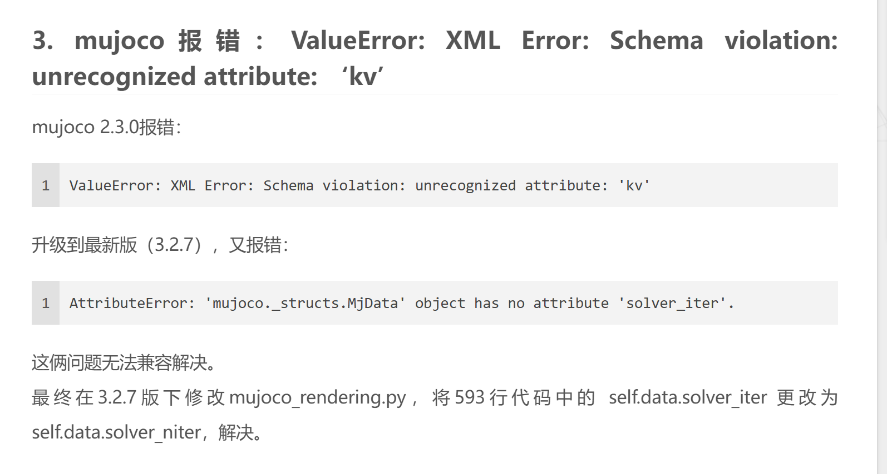
9. light灯光节点(残留)

name=""（用来索引）
mode=[fixed/track/trackcom/targetbody/targetbodycom]
fixed在某处固定光
tarck追踪物体的 trackcom几乎差不多
targetbody跟着body一起动的
target=""
跟踪的目标
directional=[false/true]
true是定向的光，就像场一样，定向平行光；false就是聚光灯，和车灯一样
castshadow=“[true/false]”
照射物体有没有影子
active=“bool”
是否能控制开关灯**
pos=“0 0 0”
dir=“0 0 0”
方向
attenuation=“1 0 0”
衰减系数,[a,b,c],I(d)=I_0/a+bd+cd^2。可以看到a,b,c越大，衰减越明显。
cutoff=“0”
聚光灯截止（最大）角度，角度制
exponent=“0”
聚光灯汇聚光程度，数值越大光线角度越小
ambient=“0 0 0”
颜色，亮度也算是这个
diffuse=“0.7 0.7 0.7”
漫射颜色
specular=“0.3 0.3 0.3”
反射颜色
定向光演示：
<light directional="true" ambient="111 "pos=" 005 "dir=" 00 - 1 " diffuse=" 111 "specular=" 111 "/>车灯演示：
<light pos="0.1 0.02" dir="10 0 -1" ambient="1 1 1" cutoff="60" exponent="0" mode="targetbody" diffuse="1 1 1" specular=" 1 1 1"/>跟踪物体打光：
<light name="light2arm" castshadow="true" mode="targetbody" target="armor0" diffuse="1 0 0" specular="1 0 0" ambient="1 0 0" cutoff="1" exponent="0" pos="2 2 1"/>replicate 复制节点（阵列排布）
mujoco中的阵列排布可以是圆周阵列和直线阵列，就像我们在常见的建模软件中的阵列一样，首先需要一个实体，可以是 body或者是 geom，然后我们要确定圆形，半径，排列数量，相距角度等。
count=“0”
阵列数量
euler=“0 0 0”
围绕三个轴阵列，参数为两个实体相隔角度，角度单位为 compiler中定义的
sep=""
名字分隔，阵列的实体名字会是原来的 name+编号,如果sep有字符，则是 name+sep+编号
offset=“0 0 0”
阵列的坐标偏移，前两个是 xy偏移，第三个是阵列的元素在 z方向上的距离间隔，也就是螺旋上升
圆周演示:
<body name="laser" pos="0.25 0.25 0.5">
<geom type="cylinder" size="0.01 0.01"/>
<replicate count="50" euler="0 0 0.1254">
<site name="rf" pos="0.1 0 0" zaxis="1 0 0" size="0.001 0.001 0.001" rgba="0.8 0.2 0.2 1"/>
</replicate>
</body> 这个演示中我们在 body里面圆周阵列了 50 个site，绕 z轴，每个site相隔角度为 0. 1254 pi，阵列半径为site中pos的第一个参数，此时pos不再决定几何体的三维空间位置，而是配合阵列使用。
效果:

官方文档演示：

直线阵列演示（不加入 euler就是直线阵列,offset作为排布方向和间距）：
<replicate count="4" offset="0 .5 0">
<geom type="box" size=".1 .1 .1"/>
</replicate><!-- 父刚体：名为laser，位置在全局坐标系(0,0,0.5)处 -->
<body name="laser" pos="0 0 0.5">
<!-- 激光源的可视化几何：球形，半径0.01，灰色（rgba最后一位1是不透明） -->
<geom type="sphere" size="0.01" rgba="0.2 0.2 0.2 1" />
<!-- 外层replicate：绕Y轴旋转复制25次，每次旋转0.251327412弧度（≈14.4°） -->
<replicate count="25" euler="0 0.251327412 0" sep="BBB">
<!-- 内层replicate：绕Z轴旋转复制25次，每次旋转0.251327412弧度（≈14.4°） -->
<replicate count="25" euler="0 0 0.251327412" sep="AAA" offset="0.0 0.0 0.0">
<!-- 被复制的核心元素：名为rf的site标记点 -->
<site name="rf" pos="0.02 0 0" zaxis="1 0 0" size="0.001 0.001 0.001"
rgba="0.2 0.2 0.2 1" />
</replicate>
</replicate>
</body>
Element 'replicate', line 62
XML Error: Schema violation: unrecognized element
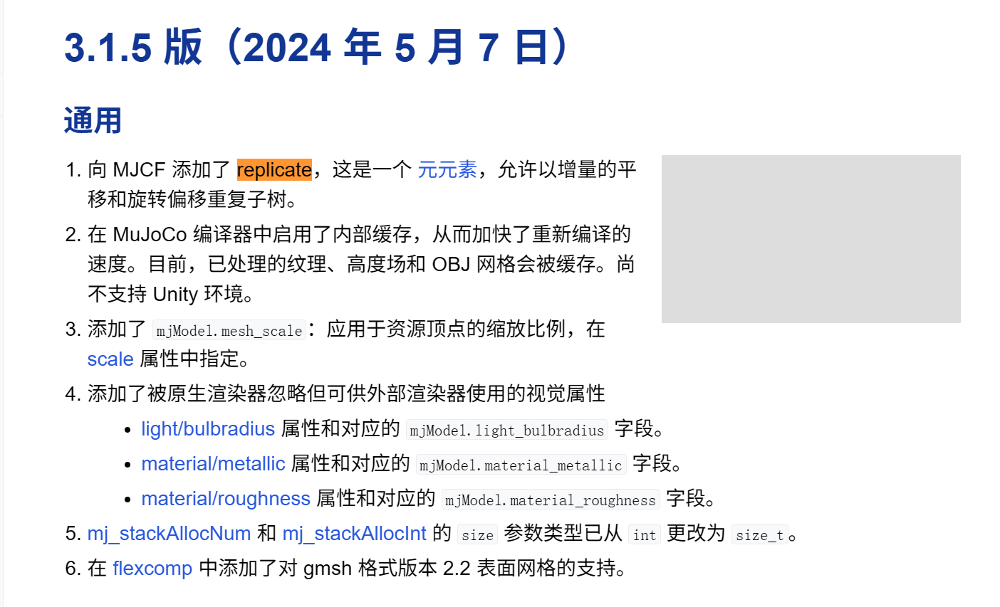
mujoco3.15才添加的replicate元素，我的版本2.3.710. tendon(残留)
肌腱的作用就是将关节组合映射，可以将多个关节组合成一个控制器进行控制。最简单的用法可以看官方模型的 car.xml。这个模型将左轮和右轮统一映射成了向前和旋转两个控制器对车辆进行控制。如果作为麦轮或者全向轮来说可以分成 x,y,roat这三个控制器。


tendon有两种组合模式，一种是spatial一种是 fixed。
spatial
使用tendon组合关节驱动的时候，要使用tendon下面的spatial节点。spatial是类似一种像肌肉一样的驱动方式，比如线驱灵巧手等。如下图所示的驱动方式，通过每个site来拉住关节驱动。

spatial包含name.class,group,limited,rgba
range=“0 0”
肌腱长度范围
frictionloss=“0”
摩擦损失
width=“0.003”
肌腱半径，可视化部分
stiffness=“0”
刚性系数，相当于弹簧的弹力系数
damping=“0”
阻尼系数。正值会产生沿肌腱作用的阻尼力（速度线性）。与 通过欧拉方法隐式积分的关节阻尼，则肌腱阻尼不是隐式积分的，因此 如果可能，应使用关节阻尼）。
fixed
使用tendon组合关节映射的时候，要使用tendon下面的fixed节点。fixed中包含关节的映射关系。fixed中joint为制定关节，coed为缩放系数。原理就是使用fixed组合之后，控制器不再使用关节控制，而是将数据传给tendon/fixed，通过code缩放参数后给joint。
肌肉
<actuator>
<muscle name="A" tendon="A" ctrlrange="-15 15"/>
</actuator>11. 传感器sensor
12. CAD导出
13. 闭链equality
14. default
默认参数，可以赋给实际应用的各种对应实体属性参数
15. composite复合体（3.2.7及以前版本）
16. flex
17. keyframe
name=""
time=""
时间，用来储存时刻
qpos=“nq”
关节位置
qvel=“nq”
关节角速度
act=“na”
执行器数据，比如扭矩或者力
ctrl=“nu”
控制输入
mpos=“real(3*mjModel.nmocap)”
动捕body的pos
mquat=“real(4*mjModel.nmocap)”
动捕body的quat